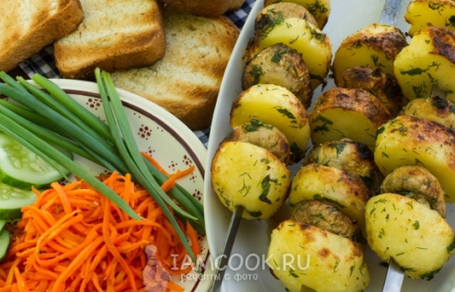

Шашлык из шампиньонов с картофелем

Ингредиенты:
- Шампиньоны - 300 г
- Картофель (отварной) - 700 г
- Масло растительное - 1 ст.л.
- Свежая зелень (укроп, петрушка) - 20 г
- Пряности - по вкусу
- Соль - 0,75 ч.л.
Пошаговый рецепт
- Сварите картошку.
- Измельчите чистую зелень (только листочки), добавьте растительное масло, соль, пряности и перемешайте.
- Положите в ароматное масло с зеленью чистые грибы. Перемешайте.
- Добавьте очищенный картофель, нарезанный крупными ломтиками.
- Выложите шампуры с шампиньонами и картофелем над углями.